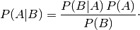
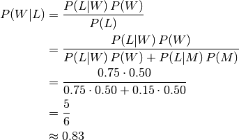

Bayes’ theorem¶
Statement¶
- P(A) : Probablities of A
- P(B) : Probablities of B
- P(A|B) : Conditional probablities of A given B
- P(B|A) : Conditional probablities of B given A

Example¶
- W : The event that the conversation was held with a woman
- L : The event that the conversation was held with a long-haired person
- P(W) = 0.5
- P(L|W) = 0.75 (Suppose it is known that 75% of women have long hair)
- P(L|M) = 0.15 (Suppose it is known that 15% of men have long hair)

Interpretations¶
Bayesian interpretation¶
- Probability measures a degree of belief.
- For proposition A and evidence B,
- P(A), the prior, is the initial degree of belief in A.
- P(A|B), the posterior, is the degree of belief having accounted for B.
- the quotient P(B|A)/P(B) represents the support B provides for A.
Frequentist interpretation¶
- Probability measures a proportion of outcomes.
- For example, suppose an experiment is performed many times.
- P(A), the proportion of outcomes with property A.
- P(B), that with property B.
- P(B|A), the proportion of outcomes with property B out of outcomes with property A.
- P(A|B), the proportion of those with A out of those with B.


![P(\text{Biased coin}) &= \frac{1}{3} \\
P(\text{Fair coin}) &= \frac{2}{3} \\
P(\text{H}|\text{Fair coin}) &= \frac{1}{2} \\
P(\text{HHH}|\text{Fair coin}) &= \frac{1}{8} \\
P(\text{HHH}|\text{Biased coin}) &= 1 \\
P(\text{Biased coin}|\text{HHH}) &= \frac{P(\text{HHH}|\text{Biased coin})P(\text{Biased coin})}{P(\text{HHH}|\text{Biased coin})P(\text{Biased coin}) + P(\text{HHH}|\text{Fair coin})P(\text{Fair coin})} \\
&= \frac{1 \times \frac{1}{3}}{1 \times \frac{1}{3} + \frac{1}{8} \times \frac{2}{3}} \quad = \quad \frac{\frac{1}{3}}{\frac{10}{24}} \quad = \quad \frac{4}{5}](../../../images/math/fc8c121679cced0a7eb41da5d6cf12be690964ba.png)